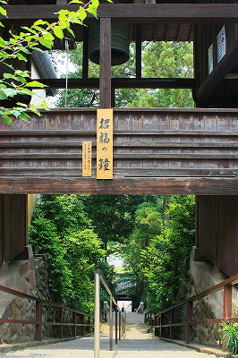

達磨寺/群馬県
高崎にある達磨寺である。
高崎といえばダルマさん。その高崎ダルマの発祥の地だとか。
だって看板に書いてありますもん。

小林山達磨寺は黄檗宗の寺だ。って看板に書いてある。
入口の総門。比較的最近出来た門のようだ。
随分変わった門だが、どこかで見たような…
（…只今、俺脳内画像サーチで検索中…）
ピコ〜ン！ピコ〜ン！

これだ！黄檗の日本総本山、万福寺の総門と一緒なんだ！
山門を潜ると長い石段。石段の先には空中回廊のような鐘楼が見える。
普段の運動不足を嘆きながら上りきると↓こんな感じ。

階段の左右には瑞雲閣といわれる寺務所と講堂があってそれを結ぶ回廊が鐘楼になっている。
瑞雲閣には後に詳しく述べるが、この寺に滞在していたブルーノ・タウト関連の書籍などがあり、気軽に閲覧できる。
大量の庚申塚が林立しており異様な雰囲気を醸し出していた。
瑞雲閣から階段を上ると観音堂。藁葺きの屋根と軒下の朱塗りが効いている。
で、さらに階段を上ると本堂。７×2間のとても間口の広い建物だ。
周辺には大量のダルマがモッシュ状態で。
中には色付け前のプロトタイプも。
右を見ても 左を見ても
ダルマだらけですわ。
子供の頃、家にあったダルマさんを無茶苦茶カスタマイズして婆ちゃんに怒られたなー。
堂内には大きなダルマさん。
そして三ツ葉葵の紋。徳川の紋を使用しているのはかつて水戸徳川家から庇護を受けていたことに由来する。
で、本堂隣の達磨堂へ。
こちらにも大きなダルマさん。
で、内部。
各地のダルマグッズが陳列されており、ダルマ博物館になっている。
この辺、京都の法輪寺に良く似ている。
日本全国のダルマの分布図がホンモノのダルマさんを使って展示されている。
姫ダルマに代表される女子ダルマ。達磨大師も草葉の陰で赤面しておろうよ。
基本赤ボディの中、異彩を放っていたのは長崎の源三だるま。こ、これは何だ？
しかし一言でダルマといっても随分色んな種類があるな〜、と改めて関心。
これは灰皿なのか？なにかの法具？
「あ〜！もうこんな時間！」てか。
片目が防犯カメラになっているアイデアダルマ。
高崎署の署長さんのアイデアとか。高崎市内のパチンコ屋には実戦配備されてるそうです。
こちらは関東圏の方には御馴染みSuicaのペンギンを象ったダルマ。
Suicaホルダー数目標達成、ですか。おめでとうございます。大変ですねえ。
で、ダルマ棚の上にそびえるひときわ大きなダルマさん。
なんと群馬県選出の内閣総理大臣のダルマ！
ドーン！
|
ドーン！
|
ドードーン！
|
| |
|
|
ヤス！ |
ブッチ！ |
黄門様！ |
…アレ？黄門様のご子息の「あなたとは違うんです！」さんがいない…
てな具合でダルマづくしのお寺であった。
お寺の片隅にはナチスから逃れてきたドイツの建築家、ブルーノ・タウトが住んでいた洗心亭がある。
さて、ココから達磨寺とほぼ関係のない与太話になだれ込むのでご了承の程を。
ブルーノ・タウト。
日本では桂離宮を再評価した人物として有名だが（実際、桂離宮の現在の立ち位置はほぼタウトの評論の影響）、ヨーロッパではドイツ表現主義建築の主要人物とされている。
西洋の近代建築史上最もエキサイティングだったムーブメントだった（と私は堅く信じている）ドイツ表現主義とはコンクリートの持つ造形表現の自由度を生かした有機的なフォルムが特徴的な建築様式である。要はコンクリの建築なのに妙にウネウネした感じ。
そんなタウトが高崎にいた頃、高崎観音（高崎白衣大観音）の建設を目にしている。
ちなみにタウトをを高崎に招聘した井上房一郎は高崎観音の建立主、井上保三郎の息子である。
つまりパトロンのパパの一世一代の大仕事だったわけ。
私はドイツ表現主義の建築と高崎観音はかなり近い位相にあると思っている。
それは当時流行（つか今でも主流）の柱や梁といった構造体がメインのモダニズム建築とは一線を画して表面の皮膜にテーマを語らせる建築であった点。これは少なくとも２０世紀前半まではコンクリ大仏とドイツ表現主義の建築だけ、なはずなのですよ。
いわばドイツ表現主義の建築とコンクリ大仏大観音は私の中では同じカテゴリーに位置する存在、いわばコンクリ構造物義兄弟だ、と思っていたのだが…
当のタウトは大激怒。
昭和10（1935）年、タウトの日記に高崎観音を評する一文が記されている。
「6月17日（月） 井上（房一郎）氏のお父さんは高崎付近の山の上に高さ40ｍの大観音像を建てようとしている。その制作費は4万5千円だそうである。鉄筋コンクリート造りで言語道断ないかものだ」。
「何だよ！タウト、義兄弟じゃないのかよ！」
ちなみにこの「いかもの」、原文ではkitschキッチュという言葉で表されている。桂離宮評論のなかでも日光東照宮をキッチュというコトバでこき下ろしている。
「桂離宮＝善 東照宮、高崎観音＝悪」
この図式に日本の建築界は数十年間捉われていくのだが、先に述べたドイツ表現主義の建築家であるタウトがこのような感覚を持っていたことは意外である。もっとバリバリのモダニストが言うならともかく。
洗心亭の床の間にはタウトの掛け軸がかけられている。
ICH LIEBE DIE JAPANISHE KULTUR
日本の文化を愛してます。の一文。
この一文をわざわざ掛け軸にするあたりが日本のモダニスト達の歓心を買うために桂離宮を誉めちぎるというリップサービスをせざるを得なかったタウトの日本での立ち位置が伺えるような気がするのだが、あまりにも穿った見方ですか？
いずれにせよコンクリ大仏黎明期におけるヨーロッパの建築家のコメントは貴重な資料といえよう。
当時最先端の鉄筋コンクリート造という技法がすでにヨーロッパでは考えられない程異様な形で高速進化していることがチョット悔しかったのではなかろうか。
ドイツでやろうとしていた事以上のぶっ飛び建築（つか大観音）を見てしまって素に戻った感じ。
そういう意味で我々は高崎観音に対して桂離宮以上に誇りに思って良いのではなかろうか。
それともあまりにもベタすぎてマジ切れだったのかな？
皆さん、どう思われます？
2009.06.
珍寺大道場 HOME